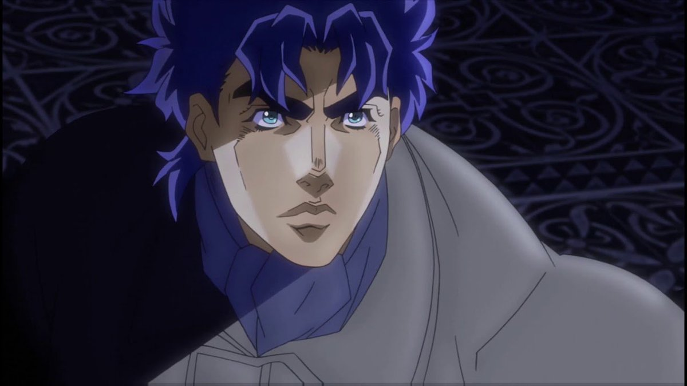

Между 12-м и 16-м веками нашей эры племя ацтеков совершает человеческое жертвоприношение, во время которого человек, надевший каменную маску, окропляет её кровью убитой девушки. Маска активируется, и множество шипов пронзают череп человека, давая ему возможность пить чужую кровь пальцем и сверхчеловеческую силу. Выясняется, что это племя пыталось захватить мир, но было каким-то образом остановлено.
